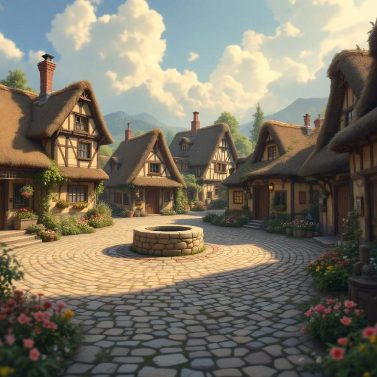
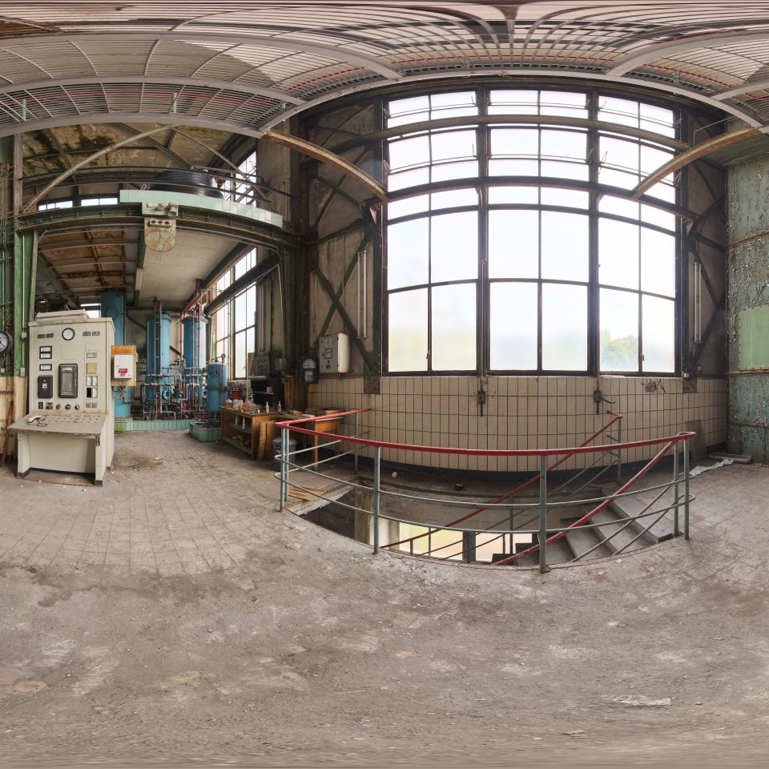

Phase 1 · Depends on P0 · Unlocks P2
2D Images / 360 Images / text → 8K ERP
Happy path is one 2D image → a full 3DGS scene. This phase only makes
outputs/<scene>/pano.png.
01Panorama page (dummy)
Toggle labels are locked: 2D Images (default) / 360 Images / text. Click the dummy toggle. Native Ostris is READY — 2D Generate is enabled when a photo is loaded and surroundings are non-empty. Comfy needed a dummy INPUT IMAGE in text mode; Votion must not.
Votion 3DGS
idle
Type or drag. MickmumpitzPanoWarp INPUT_TYPES 10–170, step 0.5. Default 70.
Always appended: no peoples, no cars (typed or Florence-2). Empty still blocks Generate. Graph demo Professional photography of living room. is demo, not a silent default. Caption runs engine.workers.caption. After Generate, prompt.txt = outpaint instruction + space + surroundings.
Empty OK in P1. Phase 3 blocks WAN if empty. Store as-is even if not 8192. Quality HiRes refuses other widths unless you Upscale to 8K.
User sentence after the comma. Empty scene → block Generate. No 2D image in this mode. After Generate, prompt.txt = locked prefix + sentence.
2:1 · live h_fov warp

360 · drag to look
2D Images: type or drag h_fov — photo sits in a green 2:1 ERP canvas (Warp). Fit = full picture; 100% = native pixels + slide. Drag the split. Right = spherical look (yaw + pitch).
Log
engine.workers.pano — one process, then exit. Florence-2 is engine.workers.caption (fills the box only).
Help
Pick 2D Images (photo on the sphere, Ostris + ERP outpaint), 360 Images (load 2:1 ERP; skip Krea), or text (Krea 2 + 360 LoRA). 2D Images: load the photo (thumbnail), type or drag h_fov (live warp on green), one sentence for the surroundings — always ends with
no peoples, no cars.
Left pane Fit / 100% + draggable split. Right 360 is spherical (yaw + pitch).
text: scene sentence after the locked trigger prefix. After Generate, prompt.txt = prefix + sentence.
Votion does not need a dummy 2D image in text mode. Ostris is READY.
Dummy widgets match the P1 lock list. 2D Images: live h_fov warp on the left (green canvas), Fit / 100%, draggable split. 360/text: 2:1 still left, spherical look right. Log and Help are drawers. Main seeds and seam seeds are visible.
02Three inputs, one output

Graph: d:\AI_3DGS\260825_MICKMUMPITZ_Krea2-360Pano-Creator_1-0.json. How-to MarkdownNote id 4 → Panorama help, do not rewrite the meaning.



03Graphs as diagrams
2D Images (Ostris READY)
#00ff00Outpaint instruction (leave as-is):
Fill the green spaces according to the image. Outpaint as a seamless 360 equirectangular panorama (2:1). Keep the horizon level. Match left and right edges.
text
360 Images
pano.png as-is + optional prompt.txtShared 8K tail (2D Images and text only)
UltimateSDUpscale node 77 widgets copied as-is. If unportable: MVP = Real-ESRGAN 2× + lanczos and label the mismatch.
Upscaler prompt is a visible box, default High resolution photography, user may edit.
04Acceptance · do not
- 2D Images is the default toggle.
- 360 Images: 2:1 file becomes
pano.pngwithout Krea. - text: 2:1 image without a 2D input; trigger prefix still on the Krea prompt.
- 2D Images Generate is enabled when Ostris is READY, a photo is loaded, and surroundings are non-empty.
- Original 2D region recognizable; outpaint string unchanged; seam not a visible cut.
- Florence-2 fills the surroundings box and appends
no peoples, no cars; user can edit; empty manual box blocks Generate. - Left 2:1 Fit / 100% and a draggable split; right 360 tilts and looks spherical.
- h_fov accepts a typed value as well as the slider (10–170, step 0.5).
- 2D Images and text: final size measured (expect 8192×4096).
Do not shell out to ComfyUI. Do not invent Warp names or strip the trigger / outpaint strings / no peoples, no cars. Do not generate at 8K natively in Krea. Do not skip seam roll.